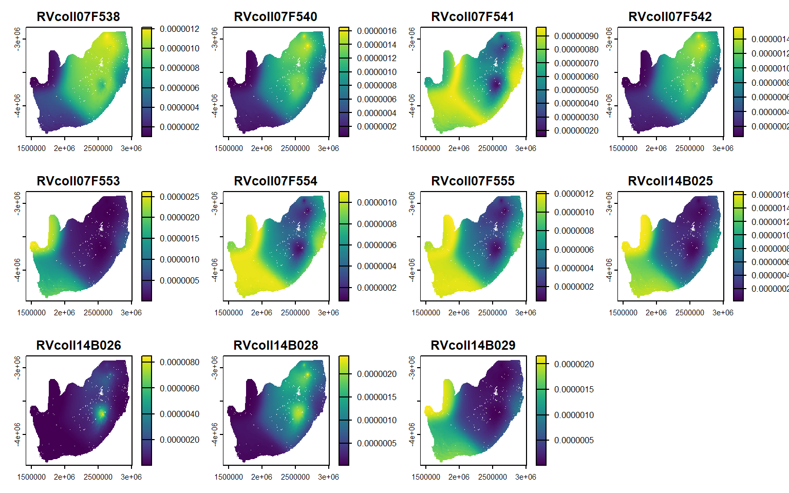
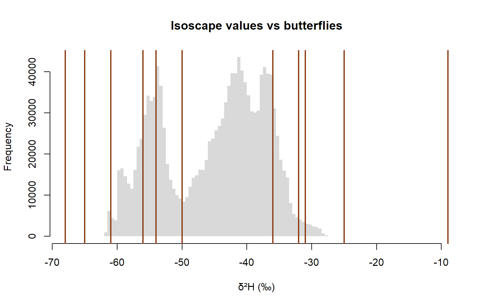
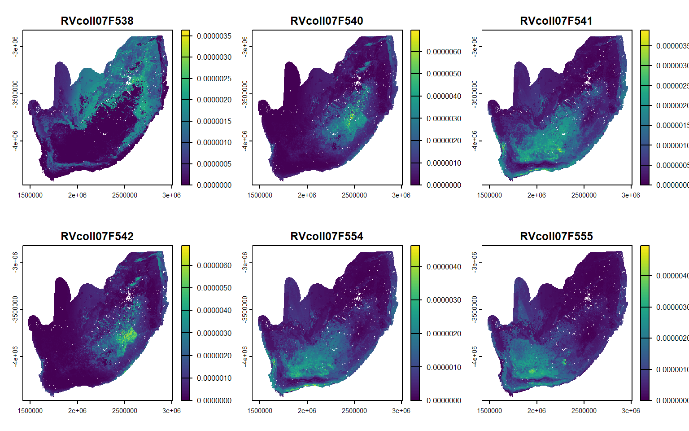
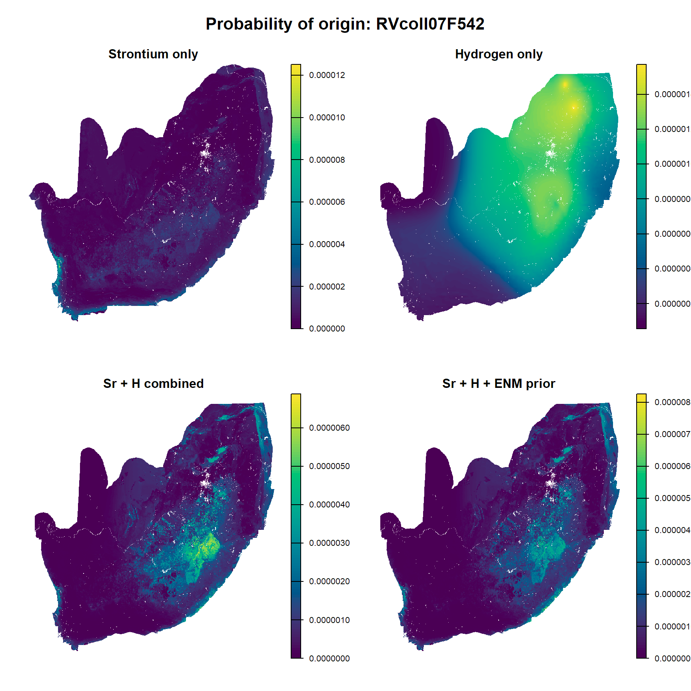
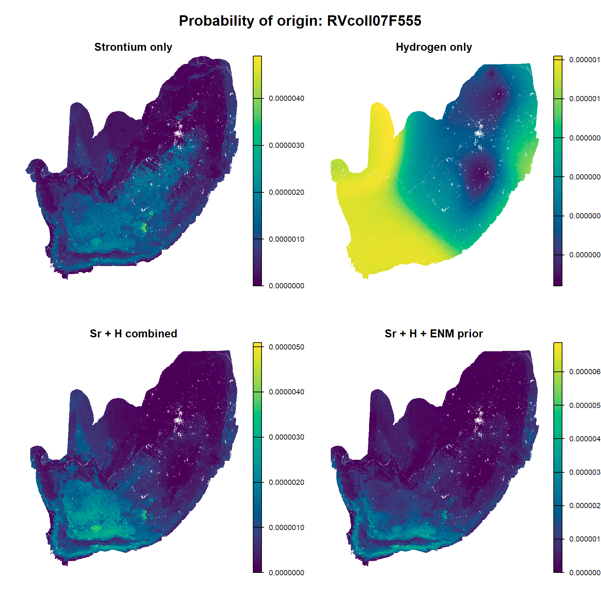

2. Combining geolocation tools
multiple isotopes and priors
Overview
Two are better than one! Many studies have shown that multi-isotope assignment can result in better spatial precision than single-isotope assignment. Let’s try it!
Setting up
unknown <- read.csv("Module3_assignment/unknown.csv")
Sr_iso_mean <- rast("Module3_assignment/rf_all_pred.tif")
Sr_iso_sd <- rast("Module3_assignment/rf_all_sd.tif")
Sr_iso <- c(Sr_iso_mean, Sr_iso_sd)
d2Hw_isoscape <- terra::rast("Module3_assignment/d2Hw_isoscape.tif")
unknown_Sr <- unknown %>%
dplyr::select(Sample_ID, Sr8786)
Sr_probsurfaces <- assignR::pdRaster(r = Sr_iso, unknown = unknown_Sr)
NULLHydrogen isoscape
Hydrogen isotopes are commonly used for geographic assignment of butterflies. Spatial variation in hydrogen isotopes is largely driven by patterns of precipitation. Since this pattern is independent of strontium isotopes, the two isotopes are great complementary geolocation tools.
It is important to use a hydrogen isoscape that has been calibrated to the material of interest. Here, I am giving you a hydrogen isoscape that has already been calibrated to insect wings. Calibrating a hydrogen isoscape involves (almost) as many decisions as developing a strontium isoscape.
Compared with strontium:
| δ²H | ⁸⁷Sr/⁸⁶Sr | |
|---|---|---|
| Controlled by | Climate: temperature, rainfall, distance from the sea | Geology: rock type and age |
| Spatial pattern | Smooth, broad gradients, mostly north–south | Patchy, can change sharply over short distances |
| Best at | Narrowing down latitude | Telling apart neighbouring areas on different geologies |
Because the two isotopes vary for different reasons, they complement each other. δ²H puts a butterfly in a band of latitude, and Sr picks out which patches within that band match.
Hydrogen isotope-based geographic assignment
What do the hydrogen-only probability surfaces look like?
unknown_H <- unknown %>%
dplyr::select(Sample_ID, d2H) #RVcoll07F553 is above range of South Africa isoscape
H_probsurfaces <- assignR::pdRaster(r = d2Hw_isoscape, unknown = unknown_H)
NULLCompare each butterfly’s δ²H with the range of values the isoscape predicts:
[1] -61.75312 -27.36206A plot makes it even clearer. The grey bars show every value on the isoscape, and each red line is a butterfly:
hist(iso_vals, breaks = 50, col = "grey85", border = NA,
xlim = range(c(iso_vals, unknown_H$d2H)),
main = "Isoscape values vs butterflies", xlab = "δ²H (‰)")
abline(v = unknown_H$d2H, col = "#8a3b12", lwd = 2)
RVcoll07F553 lies below every value on the isoscape. No cell matches it, so pdRaster() just puts most of the probability on the cells with the lowest δ²H, which are the “least bad” match. The probability surfaces look confident, but they’re wrong.
🌍 Where it came from
- It developed outside the isoscape area. Hot, dry regions have higher δ²H than anywhere in southern Africa. A long-distance migrant could have come from there.
🌿 Biology and environment
- Evaporation in the host plant. In hot, dry conditions, leaf water loses light hydrogen through transpiration and becomes enriched. A caterpillar feeding on drought-stressed plants inherits that enrichment.
- An unusual season or year. The isoscape is a long-term average. A butterfly that developed during an exceptionally hot, dry spell can fall outside it.
- Irrigated host plants. Water from reservoirs or dams evaporates before it’s used, so it can be more enriched than local rain.
🧪 Measurement or model
- A data error, such as a typo, a sign error, or a sample mix-up.
- Lab issues, such as contamination, or exchangeable hydrogen not being properly accounted for.
- Calibration, if the relationship between rainfall and wing δ²H doesn’t hold for this individual or region.
- The isoscape is wrong there. Predictions in data-poor areas may simply be too low.
What to do with it?
Don’t trust its probability map, but don’t quietly delete it either. Report it as unassigned, and say why. Check the raw data and lab records first. If the values hold up, this butterfly may be the most interesting one in the dataset: it could be evidence of a long-distance migrant.
Dual-isotope geographic assignment
Dual assignment essentially multiples the two single assignment posterior probability surfaces.
# arrange dataframe to assignR specifications
unknown_dual <- unknown %>%
mutate(in_range = d2H >= iso_range[1] & d2H <= iso_range[2]) %>%
filter(in_range == T) %>%
filter(Sample_ID != "RVcoll14B025") %>% # removing samples that have d2H values outside the isoscape range
dplyr::select(Sample_ID, Sr8786, d2H)
#arrange isoscapes with assignR function
dual_isoscapes <- isoStack(Sr_iso, d2Hw_isoscape)
# hydrogen and strontium isotope-based geographic assignment
dual_probsurfaces <- pdRaster(r = dual_isoscapes, unknown = unknown_dual)
NULLHow do these posterior probability surfaces compare to the ones generated with strontium isotopes alone? Is there a smaller area of high probability?
Using a prior
\[ P(j \mid \delta_s) = \frac{P(j)\,P(\delta_s \mid j)}{\sum P(j)\,P(\delta_s \mid j)} \]
Ecological niche model
Today we will use a September ecological niche model for painted lady butterflies from Talavera et al (2023) as a prior. What does this assume? Is this prior a good choice? What might be a better choice?
Talavera, G., García-Berro, A., Talla, V. N. K., Ng’iru, I., Bahleman, F., Kébé, K., Nzala, K. M., Plasencia, D., Marafi, M. A. J., Kassie, A., Goudégnon, E. O. A., Kiki, M., Benyamini, D., Reich, M. S., López-Mañas, R., Benetello, F., Collins, S. C., Bataille, C. P., Pierce, N. E., … Vila, R. (2023). The Afrotropical breeding grounds of the Palearctic-African migratory painted lady butterflies (Vanessa cardui). Proceedings of the National Academy of Sciences, 120(16), e2218280120. https://doi.org/10.1073/pnas.2218280120
# hydrogen and strontium isotope-based geographic assignment
prior_probsurfaces <- pdRaster(r = dual_isoscapes, unknown = unknown_dual, prior = ENM_Sept)
NULLComparison
library(terra)
id <- "RVcoll07F542"
# One map per method, with a label for each panel
maps <- list(
"Strontium only" = Sr_probsurfaces[[id]],
"Hydrogen only" = H_probsurfaces[[id]],
"Sr + H combined" = dual_probsurfaces[[id]],
"Sr + H + ENM prior" = prior_probsurfaces[[id]]
)
op <- par(mfrow = c(2, 2), # 1 row, 4 columns
oma = c(0, 0, 2.5, 0)) # space for an overall title
for (label in names(maps)) {
plot(maps[[label]],
main = label,
col = hcl.colors(100, "viridis"),
axes = FALSE)
}
mtext(paste("Probability of origin:", id), outer = TRUE, cex = 1.3, font = 2)
par(op) # reset the layoutlibrary(terra)
id <- "RVcoll07F555"
# One map per method, with a label for each panel
maps <- list(
"Strontium only" = Sr_probsurfaces[[id]],
"Hydrogen only" = H_probsurfaces[[id]],
"Sr + H combined" = dual_probsurfaces[[id]],
"Sr + H + ENM prior" = prior_probsurfaces[[id]]
)
op <- par(mfrow = c(2, 2), # 1 row, 4 columns
oma = c(0, 0, 2.5, 0)) # space for an overall title
for (label in names(maps)) {
plot(maps[[label]],
main = label,
col = hcl.colors(100, "viridis"),
axes = FALSE)
}
mtext(paste("Probability of origin:", id), outer = TRUE, cex = 1.3, font = 2)
par(op) # reset the layoutSummary
- Combining multiple geolocation tools and including priors can give spatially constrained estimates of origin
- Each geolocation tool comes with additional assumptions and uncertainty
R version 4.5.1 (2025-06-13 ucrt)
Platform: x86_64-w64-mingw32/x64
Running under: Windows 11 x64 (build 26200)
Matrix products: default
LAPACK version 3.12.1
locale:
[1] LC_COLLATE=English_Canada.utf8 LC_CTYPE=English_Canada.utf8
[3] LC_MONETARY=English_Canada.utf8 LC_NUMERIC=C
[5] LC_TIME=English_Canada.utf8
time zone: Australia/Sydney
tzcode source: internal
attached base packages:
[1] stats graphics grDevices utils datasets methods base
other attached packages:
[1] ggthemes_5.2.0 viridis_0.6.5 viridisLite_0.4.2
[4] tidyterra_0.7.2 sf_1.0-21 rnaturalearth_1.1.0
[7] terra_1.8-70 assignR_2.4.3.9000 lubridate_1.9.4
[10] forcats_1.0.1 stringr_1.5.2 dplyr_1.1.4
[13] purrr_1.1.0 readr_2.1.5 tidyr_1.3.1
[16] tibble_3.3.0 ggplot2_4.0.0 tidyverse_2.0.0
loaded via a namespace (and not attached):
[1] generics_0.1.4 class_7.3-23 KernSmooth_2.23-26 stringi_1.8.7
[5] lattice_0.22-7 hms_1.1.4 digest_0.6.37 magrittr_2.0.4
[9] evaluate_1.0.5 grid_4.5.1 timechange_0.3.0 RColorBrewer_1.1-3
[13] fastmap_1.2.0 jsonlite_2.0.0 e1071_1.7-16 DBI_1.2.3
[17] gridExtra_2.3 scales_1.4.0 codetools_0.2-20 cli_3.6.5
[21] rlang_1.1.6 units_1.0-0 withr_3.0.2 yaml_2.3.10
[25] tools_4.5.1 tzdb_0.5.0 geosphere_1.5-20 vctrs_0.6.5
[29] R6_2.6.1 proxy_0.4-27 classInt_0.4-11 lifecycle_1.0.5
[33] htmlwidgets_1.6.4 pkgconfig_2.0.3 pillar_1.11.1 gtable_0.3.6
[37] glue_1.8.0 Rcpp_1.1.0 xfun_0.53 tidyselect_1.2.1
[41] rstudioapi_0.19.0 knitr_1.50 farver_2.1.2 htmltools_0.5.8.1
[45] rmarkdown_2.30 compiler_4.5.1 S7_0.2.0 mvnfast_0.2.8
[49] sp_2.2-0 Next: Section 3 →